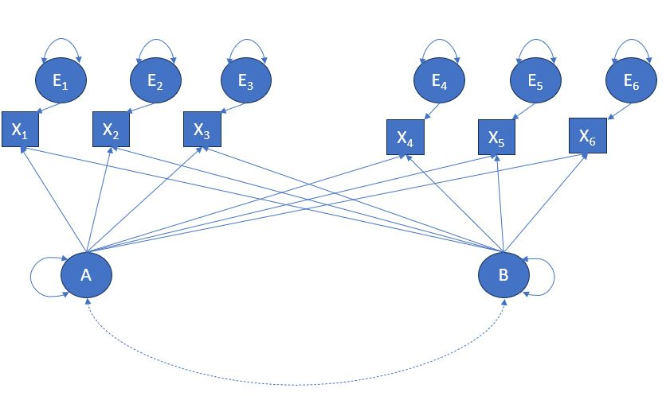
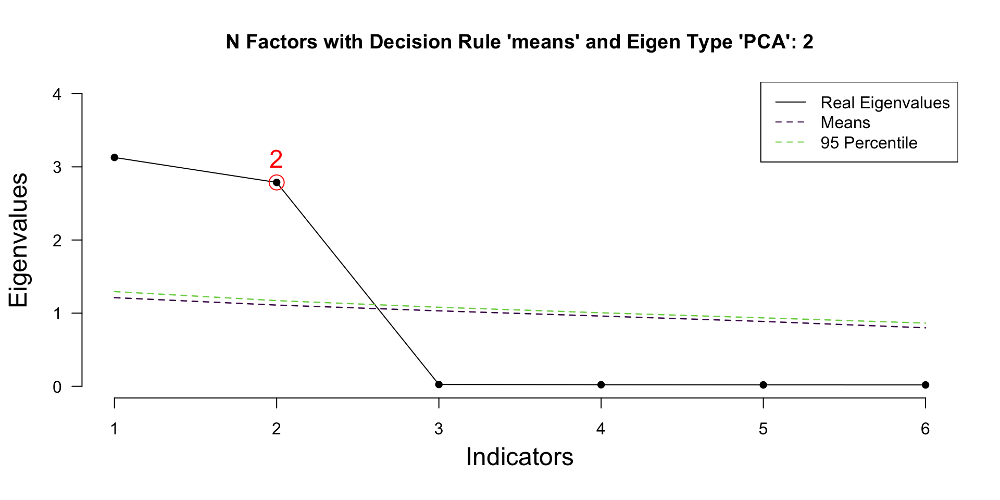
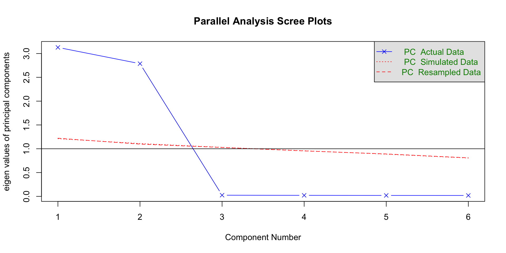

Today we will define what exploratory factor analysis (EFA) is, we focus on the steps required to carry out EFA using R.
What is Factor Analysis
Factor Analysis in the statistical technique that seeks to identify underlying relationships between observed variables.
Specifically, grouping these variables into groups where in-group variables correlate highly.
Ideally, we want variables to correlate highly only with their in-group variables, and correlate weakly or not at all with variables belonging to other groups.
We will be referring to the term group as factor. There factors are unobserved variables…
What is Exploratory Factor Analysis?
It is a statistical exploratory process that seeks to identify underlying relationships between observed variables.
Furthermore, with EFA we aim to identify latent variables that might are responsible for the shared variances between the observed variables. As mentioned in our introduction lectures latent variables are variables that are not directly measured. Instead, they are inferred by the existing relationships between our observed variables.
Specification of models in EFA
According to Kline (pages 190-191):
EFA does not require an a priori specification, with number of possible factors varying from one up to as many as the indicators. (Highly not advised, but theoretically possible)
In EFA we have unrestricted measurement models where indicators are allowed to depend on all factors
Multiple factors models in EFA are not actually identified. Headache question: Why would that be the case?
In EFA we assume that specific variance of each indicator is not shared what that of any other indicator
Note: Next week we will contrast all the above points with Confirmatory Factor Analysis (CFA)
Visualisation

Do we analyze correlated Factors?
Typically this is not required. However, we can specify a rotation that will allow us to analyze correlated factors!
Rotation?
Rotation allows us to simplify our model further, thus enhance its interpretation. This is an option that is applied after our initial solution and its aim is to achieve a solution where an indicator has high loading to one factor (or as few as possible) and low loading on all other factors.
Rotations
Orthogonal rotation, usually the default setting for most EFA functions, treats all factors are non-correlated. The most commonly used is Varimax, however there are others. Be cautious when using orthogonal rotations, refer back to your theoretical background in order to make sure that your possible factors are indeed expected to be uncorrelated.
Oblique rotation, allows for correlated factors. The most commonly used is Promax, however there are others.
So which one should we use? Outside of the correlated or uncorrelated allowance it is difficult to decide. Many different rotation methods may give similarly valid results. I advise you to look into the factor score indeterminacy for more details.
Software Considerations
Can we use lavaan to carry our EFA?
Yes, however …… psych package might make your life easier.
EFAtools, will definitely make your life easier.
We will use all three in combination in the coming examples and you can decide on your own.
Can we always carry out EFA?
Some researchers argue that you could. You can definitely try, in terms of coding and running the relevant software.
However, you shouldn’t if you do not meet the following two criteria (at minimum).
KMO: Kaiser-Meyer-Olkin measure of sampling adequacy: Evaluates whether our sample is suitable for factor analysis.It does so by evaluating the proportion of variance among variable that could be attributed to underlying factors. Ranges from 0 - 1, and values closer to 1 indicate higher suitability.
Bartlett’s test of Sphericity: Assesses whether our variables/indicators have significant correlations. If our correlations are non-significant then we should not proceed. Here we are looking for evidence (p < .05) in order to reject the null hypothesis that our inter-variable correlations are zero.
Other Useful Terminology
Communality: The proportion of variance explained by the common factor. This will be used as a decision criterion to include or exclude indicators to a factor.
Percentage of Variance: The percentage of variance that is due to one factor in relation to the total variance in all factors.
Eigenvalue: The total variance explained by each factor, we are ideally looking for eigenvalues above 1.
Let us work through an example together
First, let’s create the random data.
Code
set.seed(1212)### normally distributed factors### these are just to help me set the indicators### the f1 and f2 will not be included in the data.framef1 <-rnorm(250)f2 <-rnorm(250)### f1 indicators x1 to x3x1 <- f1 +rnorm(250, sd=0.15)x2 <- f1 +rnorm(250, sd=0.15)x3 <- f1 +rnorm(250, sd=0.15)### f2 indicators x4 to x6x4 <- f2 +rnorm(250, sd=0.15)x5 <- f2 +rnorm(250, sd=0.15)x6 <- f2 +rnorm(250, sd=0.15)### creating the dataframedf <-data.frame(x1=x1, x2=x2, x3=x3, x4=x4, x5=x5, x6=x6)
Assess KMO and Bartlett’s test of Sphericity
EFAtools
Code
library(psych)library(EFAtools)KMO(df) ### THIS IS NOW MASKED BY EFAtools
── Kaiser-Meyer-Olkin criterion (KMO) ──────────────────────────────────────────
✔ The overall KMO value for your data is middling.
These data are probably suitable for factor analysis.
Overall: 0.795
For each variable:
x1 x2 x3 x4 x5 x6
0.790 0.775 0.819 0.789 0.793 0.807
Code
BARTLETT(df) ### THIS IS NOW MASKED BY EFAtools
✔ The Bartlett's test of sphericity was significant at an alpha level of .05.
These data are probably suitable for factor analysis.
𝜒²(15) = 3272.23, p < .001
Parallel Analysis performed using 1000 simulated random data sets
Eigenvalues were found using PCA
Decision rule used: means
── Number of factors to retain according to ────────────────────────────────────
◌ PCA-determined eigenvalues: 2

Determining number of factors
psych
Code
fa.parallel(df, fa="pc")
Parallel analysis suggests that the number of factors = NA and the number of components = 2

In EFAtools you can also run multiple retention methods
── Tests for the suitability of the data for factor analysis ───────────────────
Bartlett's test of sphericity
✔ The Bartlett's test of sphericity was significant at an alpha level of .05.
These data are probably suitable for factor analysis.
𝜒²(15) = 3272.23, p < .001
Kaiser-Meyer-Olkin criterion (KMO)
✔ The overall KMO value for your data is middling with 0.795.
These data are probably suitable for factor analysis.
── Number of factors suggested by the different factor retention criteria ──────
◌ Empirical Kaiser criterion: 2
◌ Parallel analysis with PCA: 2
◌ Parallel analysis with SMC: 2
◌ Sequential 𝜒² model tests: 2
◌ Lower bound of RMSEA 90% confidence interval: 2
◌ Akaike Information Criterion: 2
Multiple Scree-plots
Try the following code at home by removing the #
Code
# N_FACTORS(df, method = "ULS")
Factor Extraction
EFAtools
Code
EFA(df, n_factors =2, method ="ML")
EFA performed with type = 'EFAtools', method = 'ML', and rotation = 'none'.
── Unrotated Loadings ──────────────────────────────────────────────────────────
F1 F2
x1 -.561 .815
x2 -.562 .816
x3 -.552 .818
x4 .846 .515
x5 .855 .500
x6 .844 .515
── Variances Accounted for ─────────────────────────────────────────────────────
F1 F2
SS loadings 3.093 2.781
Prop Tot Var 0.515 0.463
Cum Prop Tot Var 0.515 0.979
Prop Comm Var 0.527 0.473
Cum Prop Comm Var 0.527 1.000
── Model Fit ───────────────────────────────────────────────────────────────────
𝜒²(4) = 1.47, p = .832
CFI = 1.00
RMSEA [90% CI] = .00 [.00; .06]
AIC = -6.53
BIC = -20.61
CAF = .50
Rotating solution
EFAtools
Code
EFA(df, n_factors =2, rotation ="promax")
EFA performed with type = 'EFAtools', method = 'PAF', and rotation = 'promax'.
── Rotated Loadings ────────────────────────────────────────────────────────────
F1 F2
x1 -.004 .989
x2 -.003 .991
x3 .006 .987
x4 .991 .005
x5 .989 -.012
x6 .989 .007
── Factor Intercorrelations ────────────────────────────────────────────────────
F1 F2
F1 1.000 -0.058
F2 -0.058 1.000
── Variances Accounted for ─────────────────────────────────────────────────────
F1 F2
SS loadings 3.107 2.766
Prop Tot Var 0.518 0.461
Cum Prop Tot Var 0.518 0.979
Prop Comm Var 0.529 0.471
Cum Prop Comm Var 0.529 1.000
── Model Fit ───────────────────────────────────────────────────────────────────
CAF: .50
df: 4
EFA performed with type = 'EFAtools', method = 'ULS', and rotation = 'oblimin'.
── Rotated Loadings ────────────────────────────────────────────────────────────
F1 F2
x1 -.004 .989
x2 -.003 .991
x3 .006 .987
x4 .991 .005
x5 .989 -.012
x6 .989 .007
── Factor Intercorrelations ────────────────────────────────────────────────────
F1 F2
F1 1.000 -0.058
F2 -0.058 1.000
── Variances Accounted for ─────────────────────────────────────────────────────
F1 F2
SS loadings 3.107 2.766
Prop Tot Var 0.518 0.461
Cum Prop Tot Var 0.518 0.979
Prop Comm Var 0.529 0.471
Cum Prop Comm Var 0.529 1.000
── Model Fit ───────────────────────────────────────────────────────────────────
𝜒²(4) = 0.00, p =1.000
CFI = 1.00
RMSEA [90% CI] = .00 [.00; .00]
AIC = -8.00
BIC = -22.09
CAF = .50
Factor analysis with Call: fa(r = df, nfactors = 2, fm = "ml")
Test of the hypothesis that 2 factors are sufficient.
The degrees of freedom for the model is 4 and the objective function was 0.01
The number of observations was 250 with Chi Square = 1.45 with prob < 0.84
The root mean square of the residuals (RMSA) is 0
The df corrected root mean square of the residuals is 0
Tucker Lewis Index of factoring reliability = 1.003
RMSEA index = 0 and the 10 % confidence intervals are 0 0.055
BIC = -20.64
With factor correlations of
ML1 ML2
ML1 1.00 -0.06
ML2 -0.06 1.00
This is lavaan 0.6.17 -- running exploratory factor analysis
Estimator ML
Rotation method PROMAX OBLIQUE
Promax kappa 4
Rotation algorithm (rstarts) PROMAX (0)
Standardized metric TRUE
Row weights Kaiser
Number of observations 250
Fit measures:
aic bic sabic chisq df pvalue cfi rmsea
nfactors = 2 1025.02 1084.885 1030.994 1.478 4 0.831 1 0
Eigenvalues correlation matrix:
ev1 ev2 ev3 ev4 ev5 ev6
3.1285 2.7871 0.0247 0.0214 0.0193 0.0189
Standardized loadings:
f1 f2 unique.var communalities
x1 0.989 0.021 0.979
x2 0.991 0.018 0.982
x3 0.987 0.026 0.974
x4 0.991 0.019 0.981
x5 0.989 0.020 0.980
x6 0.989 0.022 0.978
f2 f1 total
Sum of sq (obliq) loadings 2.939 2.935 5.873
Proportion of total 0.500 0.500 1.000
Proportion var 0.490 0.489 0.979
Cumulative var 0.490 0.979 0.979
Factor correlations:
f1 f2
f1 1.000
f2 -0.058 1.000
OK, time for our collaborative example
We will use a lavaan built-in dataset called HolzingerSwineford1939
The data consists of mental ability test scores of seventh- and eighth-grade children from two different schools (Pasteur and Grant-White). In our version of the dataset, only 9 out of the original 26 tests are included. A CFA model that is often proposed for these 9 variables consists of three latent variables (or factors), each with three indicators:
a visual factor measured by 3 variables: x1, x2 and x3
a textual factor measured by 3 variables: x4, x5 and x6
a speed factor measured by 3 variables: x7, x8 and x9